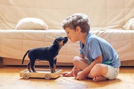
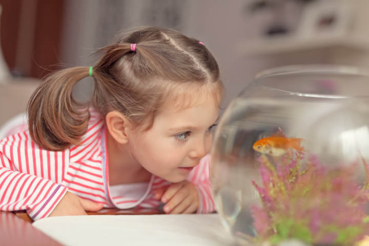
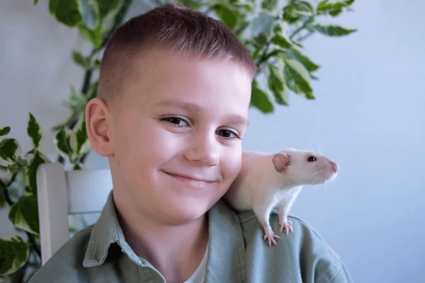
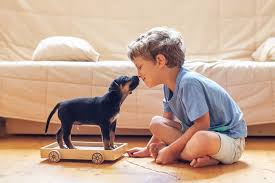
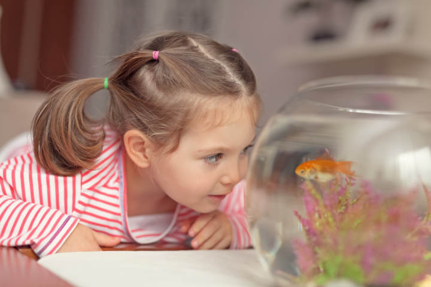
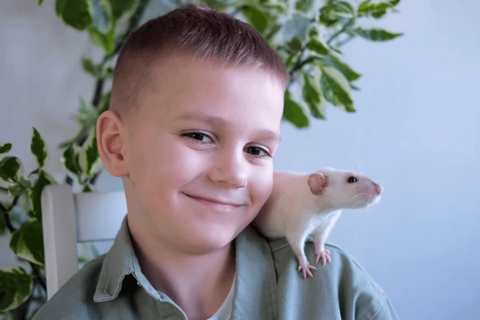

Perros
Descubre la alegría de tener un perro con nuestro catálogo completo. Aquí encontrarás información detallada sobre razas, temperamentos, y cuidados para ayudarte a elegir el mejor amigo peludo para tu hogar. Los perros ofrecen un amor incondicional, reducen el estrés y fomentan un estilo de vida más activo. Son compañeros leales que llenarán tus días de risas y afecto. ¡Explora y prepárate para dar la bienvenida a una increíble fuente de felicidad y compañía!


 




